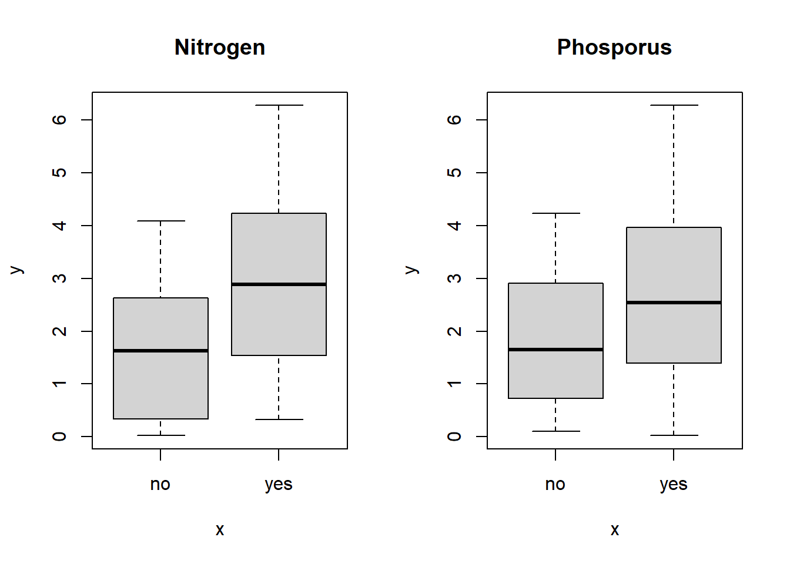
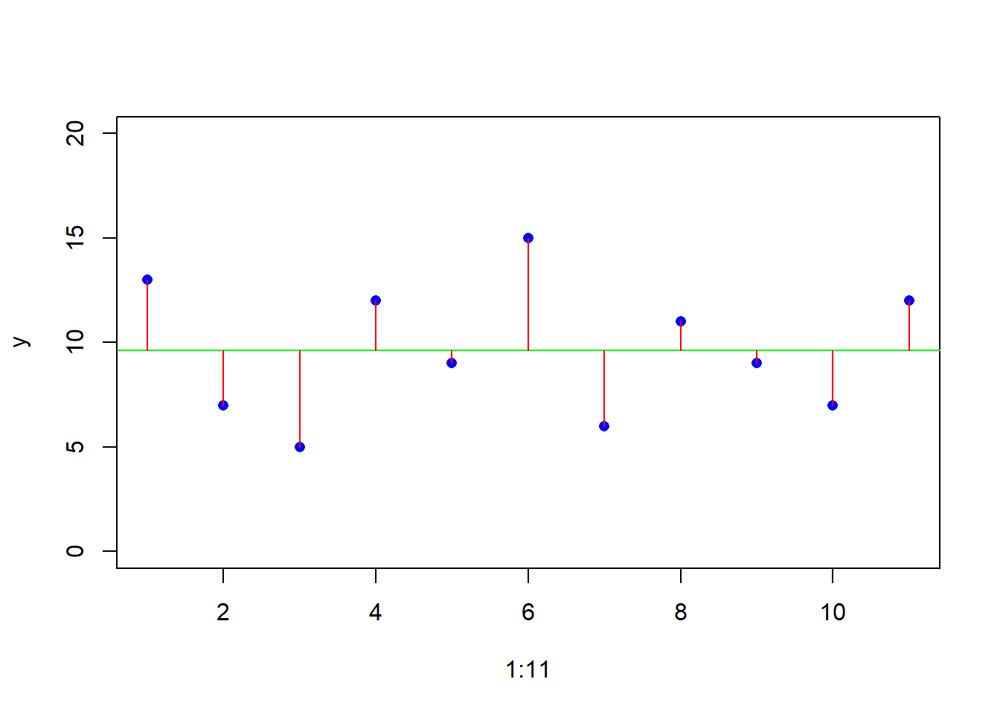
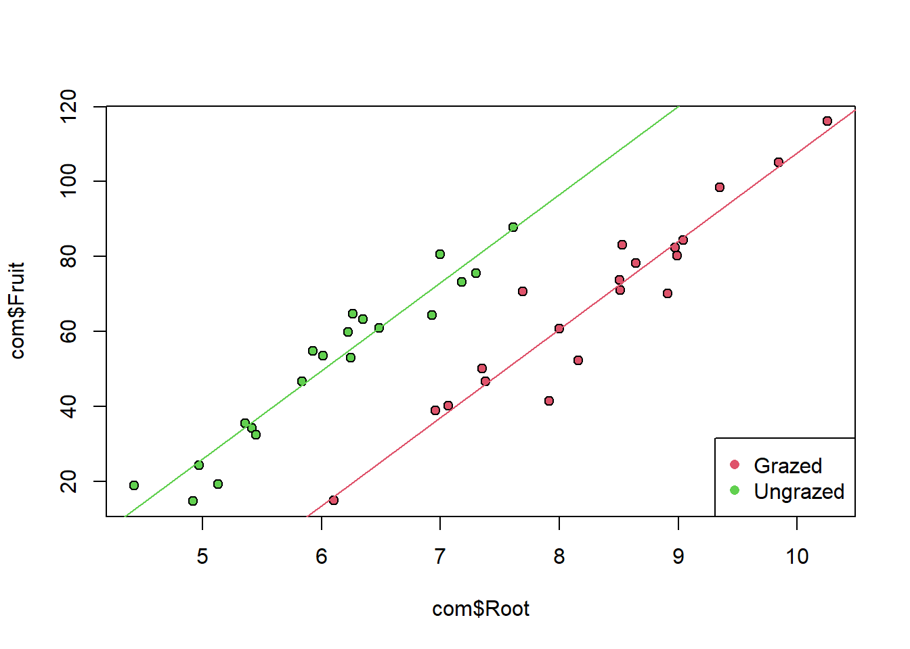

[1] "Field.Name" "Area" "Slope" "Vegetation" "Soil.pH"
[6] "Damp" "Worm.density"Statistics and R languange
Dataframe Operation
Checking the columns
SUmmary
Field.Name Area Slope Vegetation
Length:20 Min. :0.800 Min. : 0.00 Length:20
Class :character 1st Qu.:2.175 1st Qu.: 0.75 Class :character
Mode :character Median :3.000 Median : 2.00 Mode :character
Mean :2.990 Mean : 3.50
3rd Qu.:3.725 3rd Qu.: 5.25
Max. :5.100 Max. :11.00
Soil.pH Damp Worm.density
Min. :3.500 Mode :logical Min. :0.00
1st Qu.:4.100 FALSE:14 1st Qu.:2.00
Median :4.600 TRUE :6 Median :4.00
Mean :4.555 Mean :4.35
3rd Qu.:5.000 3rd Qu.:6.25
Max. :5.700 Max. :9.00 The use of aggregates function
Arable Grassland Meadow Orchard Scrub
5.333333 2.444444 6.333333 9.000000 5.250000 Community Area Slope Soil.pH Worm.density
1 Arable 3.866667 1.333333 4.833333 5.333333
2 Grassland 2.911111 3.666667 4.100000 2.444444
3 Meadow 3.466667 1.666667 4.933333 6.333333
4 Orchard 1.900000 0.000000 5.700000 9.000000
5 Scrub 2.425000 7.000000 4.800000 5.250000Multiple classification
moisture community Area Slope Soil.pH Worm.density
1 FALSE Arable 3.866667 1.333333 4.833333 5.333333
2 FALSE Grassland 3.087500 3.625000 3.987500 1.875000
3 TRUE Grassland 1.500000 4.000000 5.000000 7.000000
4 TRUE Meadow 3.466667 1.666667 4.933333 6.333333
5 FALSE Orchard 1.900000 0.000000 5.700000 9.000000
6 FALSE Scrub 3.350000 5.000000 4.700000 7.000000
7 TRUE Scrub 1.500000 9.000000 4.900000 3.500000Get to Know the Data
Check if any unusual data points
To find which data is the outlier in the above scatter plot
[1] 50So it is the the 50 th data point.
Find Relathionsip
Numeric vs Numeric Variabales
From plot above we can see : 1. The relathioship between response and explanatory variables is curved 2. Degree of scatter from left to right increases (non heterogenous), thus heterocedascity.
Categorical vs Numeric Variabales
We see an overall pattern of temperature in a year. We see an outlier at month-6, it turns out a missing data that inputted as zero.
making Conditional Plot (COPLOT)
Alter graphics parameter to specifiy two sets of axis on the same row then make a simple scatter plot
To look for interaction between explanatory variables and response variables, we employ coplot. It plot Y agains X conditional on the value of Z. Z is numeric variables, by default the coplot split Z into six graphs, with the lowest value appear in the bottom left-hand.
The relathiosip of X and Y change according to Z, as increasing Z the trend comes positive.
Interaction in Categorical Data

Finding mean for each groups
no yes
no 1.47384 1.875928
yes 2.28999 3.480184Nitrogen only, gives (effect sizes) 2.29/1.47 (1.55) while nitrogen + phosporus gives 3,48/1.87 (1.86) increase in yield. Thus effect size of nitrogen increase depends on phosporus. This is called statistical interaction.
Central Tendency
Variance
A measure of variability is perhaps the most important quantity in statistical analysis. The greater variability ~ the greater the uncertainty, the harder to distinguish competing hypothesis.
Ilustration of Variance
Just learn how to make the graph
Finding Range
[1] 5 15Illustration of Mean Value

When Variance are different, dont compare the means.
Single-Samples
- what is the mean value?
- is it different from current expectation or theory?
- what is the estimate?
Two-Samples
Regression
Analysis of Variance
Analysis of Covariance (ANCOVA)
Ancova involves a combination of regression and analysis of variance. The response variable is a continous, and there is at least one continous explanatory variable & at least one categorical variable.
Principle of parsimony If the simpler model does not explain significantly less of the variation in the response, then the simpler model preferred. Test explanatory power: Anova or AIC
- anova: retain the more complicated model,
- AIC: prefer model with lower value.
Illustration: response variable: fruit explanatory variable: root size and grazing
[1] "Root" "Fruit" "Grazing"'data.frame': 40 obs. of 3 variables:
$ Root : num 6.22 6.49 4.92 5.13 5.42 ...
$ Fruit : num 59.8 61 14.7 19.3 34.2 ...
$ Grazing: chr "Ungrazed" "Ungrazed" "Ungrazed" "Ungrazed" ...First lets see the data
Bigger roots produced more seeds
Grazed Ungrazed
67.9405 50.8805 It seems that the grazed plants produced more fruits. Lets do the ANOVA
Df Sum Sq Mean Sq F value Pr(>F)
com$Grazing 1 2910 2910.4 5.309 0.0268 *
Residuals 38 20833 548.2
---
Signif. codes: 0 '***' 0.001 '**' 0.01 '*' 0.05 '.' 0.1 ' ' 1It is indeed significant from ANOVA.
Lets do the ANCOVA, we use the most complex model, two intercept and two slopes for the grazed and ungrazed (use asterisk*). in ANCOVA, order of the explanatory variables matter.
ROOT first
Df Sum Sq Mean Sq F value Pr(>F)
com$Root 1 16795 16795 359.968 < 2e-16 ***
com$Grazing 1 5264 5264 112.832 1.21e-12 ***
com$Root:com$Grazing 1 5 5 0.103 0.75
Residuals 36 1680 47
---
Signif. codes: 0 '***' 0.001 '**' 0.01 '*' 0.05 '.' 0.1 ' ' 1Grazing first
Df Sum Sq Mean Sq F value Pr(>F)
com$Grazing 1 2910 2910 62.380 2.26e-09 ***
com$Root 1 19149 19149 410.420 < 2e-16 ***
com$Grazing:com$Root 1 5 5 0.103 0.75
Residuals 36 1680 47
---
Signif. codes: 0 '***' 0.001 '**' 0.01 '*' 0.05 '.' 0.1 ' ' 1Both produces similar error sum of square (1680) and interaction sum of squares (5). The regression sum of square where higher when root fitted after grazing (19149) then before grazing (16795) due to non-orthogonal data.
The SSRdiff, representing differences in slope between grazed and ungrazed treatments appear insignificant, thus we can remove it. Then we fit difference intercepts for grazed and ungrazed plants but fit the same slope to both graphs (we use + sign in formula):
Df Sum Sq Mean Sq F value Pr(>F)
com$Grazing 1 2910 2910 63.93 1.4e-09 ***
com$Root 1 19149 19149 420.62 < 2e-16 ***
Residuals 37 1684 46
---
Signif. codes: 0 '***' 0.001 '**' 0.01 '*' 0.05 '.' 0.1 ' ' 1Does the simpler model have significantly lower explanatory power? we use anova:
Analysis of Variance Table
Model 1: com$Fruit ~ com$Grazing * com$Root
Model 2: com$Fruit ~ com$Grazing + com$Root
Res.Df RSS Df Sum of Sq F Pr(>F)
1 36 1679.7
2 37 1684.5 -1 -4.8122 0.1031 0.75the simpler model does not produce lower explanatory power (p = 0,75), thus we can adopt it.
if we see the linear model of model2
Call:
lm(formula = com$Fruit ~ com$Grazing + com$Root)
Residuals:
Min 1Q Median 3Q Max
-17.1920 -2.8224 0.3223 3.9144 17.3290
Coefficients:
Estimate Std. Error t value Pr(>|t|)
(Intercept) -127.829 9.664 -13.23 1.35e-15 ***
com$GrazingUngrazed 36.103 3.357 10.75 6.11e-13 ***
com$Root 23.560 1.149 20.51 < 2e-16 ***
---
Signif. codes: 0 '***' 0.001 '**' 0.01 '*' 0.05 '.' 0.1 ' ' 1
Residual standard error: 6.747 on 37 degrees of freedom
Multiple R-squared: 0.9291, Adjusted R-squared: 0.9252
F-statistic: 242.3 on 2 and 37 DF, p-value: < 2.2e-16The model has high explanatory variables, accounting for 93% variation (multiple r squared). The intercept (-127.8) is the intercept for the graph of fruit production against plant rootstock size for the grazing variable which the factor level whose come first (in this case grazed).
[1] "Grazed" "Ungrazed"The com\(GrazingUngrazed is the difference in intercept for the ungrazed plants (-127.8 + 36.1 = -91.726). THe com\)Root is the slope, the gradient of fruit production against initial rootstock size. It is same for both grazed or ungrazed, if it is difference it will showed in the fourth row the difference between slopes.

This showed that, the Grazed plants had relatively larger rootstock size then ungrazed plants, thus explain why in the boxplot of fruit ~ grazing showed that grazed plants produce more fruits while it actually reduce fruit production.